Website Redesign
Identifying the Challenge
Poor readability and ineffective calls to action on the website's landing page present a significant challenge. These detract from the initial user experience and prevent the site from making a lasting impact in driving conversion rates.
💡 How might we improve the overall user experience of the landing page by addressing both readability issues and ineffective calls to action?
Research
With the 2-week deadline, I had to prioritize efficiently gathering key insights to inform the redesign. My research focused on understanding the target audience, analyzing the competitive landscape, and evaluating the existing website's strengths and weaknesses to identify key areas for improvement through my knowledge of UX design principles.
Users
To understand what potential investors or clients look at, I collaborated with CourseAssist AI's CEO to come up with a list of users to help guide my design choices:
- Universities
- Instructors
Understanding who the potential customers are allowed me to adopt a user-centric approach, tailoring the landing page content to effectively communicate why universities and instructors should consider using CourseAssist AI, and guiding my choice of language to build trust.
Looking at the competitive landscape
I also visited other websites that provide a similar product to CourseAssist AI to understand how information is presented to potential clients/investors.
Some common design choices include:
- Visual hierarchy which is crucial for readability
- Grid structure to organize information on their site, providing a consistent, clean layout for readability
- Images/Media to help demonsrate company's product features to capture user's attention, and emphasizing their most important features
- Effective calls to action in the navigation bar, hero section, and closing section
Analyzing the website
By using my knowledge of UX design principles, I analyzed the existing website to identify its strengths and weaknesses. The navigation bar was simple, making it easy for users to find their way around. However, the website needs improvement in visual hierarchy to clearly differentiate between headers and paragraph text, and in accessibility, particularly regarding readability due to cluttered content and the lack of responsiveness across different screen sizes. Its ineffective use of primary colors and choice of primary calls to action also poses a problem.
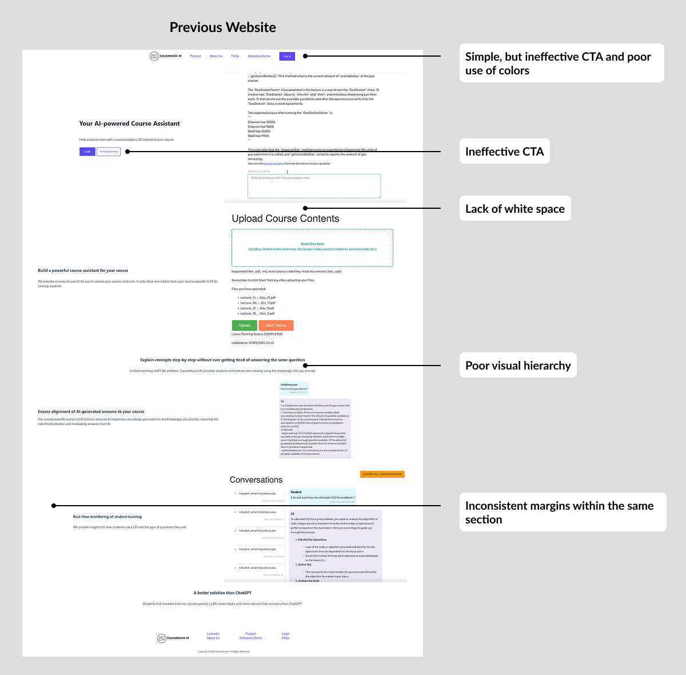Ideation & Design
My primary focus was on reimagining the CourseAssist AI landing page to create a stronger initial impact, and ultimately drive higher conversion rates. This involved exploring various layouts, ensuring responsiveness across different devices, and strategically refining key calls to action.
Experimenting with different layouts
I explored several layout iterations within Figma, focusing on different arrangements of the navigation bar and the product's feature hightlight.
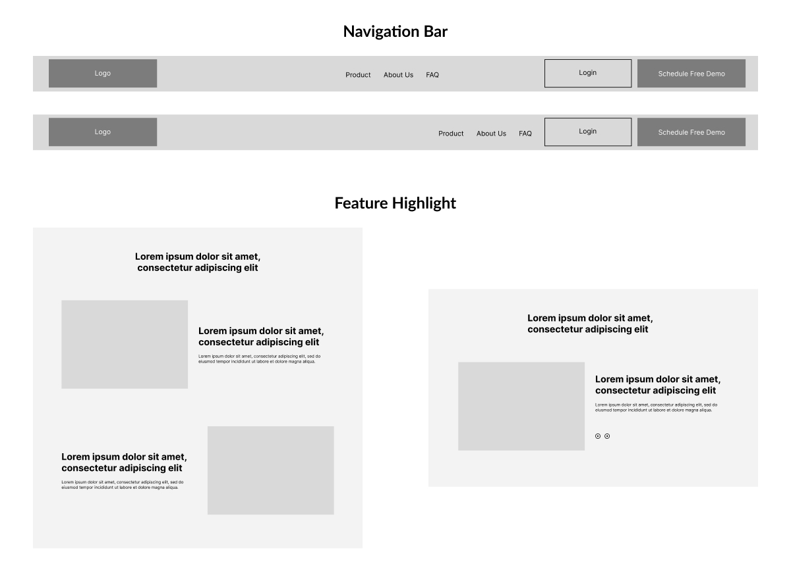Designing for different screen sizes
The previous website suffered from responsiveness issues, such as content being cut off on smaller screens. To create a more seamless and accessible experience, I designed accross various devices, establishing breakpoints for mobile, tablet, and desktop views to ensure content adapts appropriately to each screen size.
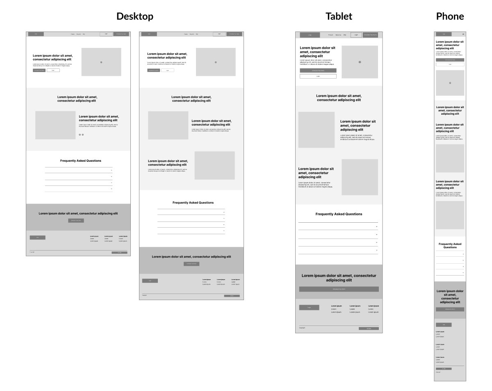Increasing conversion rates
To address the goal of increasing conversion rates, I made the strategic decision to shift their primary call to action from "Login" to "Schedule a Demo." This shift recognizes a visitor landing on the page is likely not yet a customer, and "Schedule a Demo" provides a clear, first step pathway in engaging with the product.
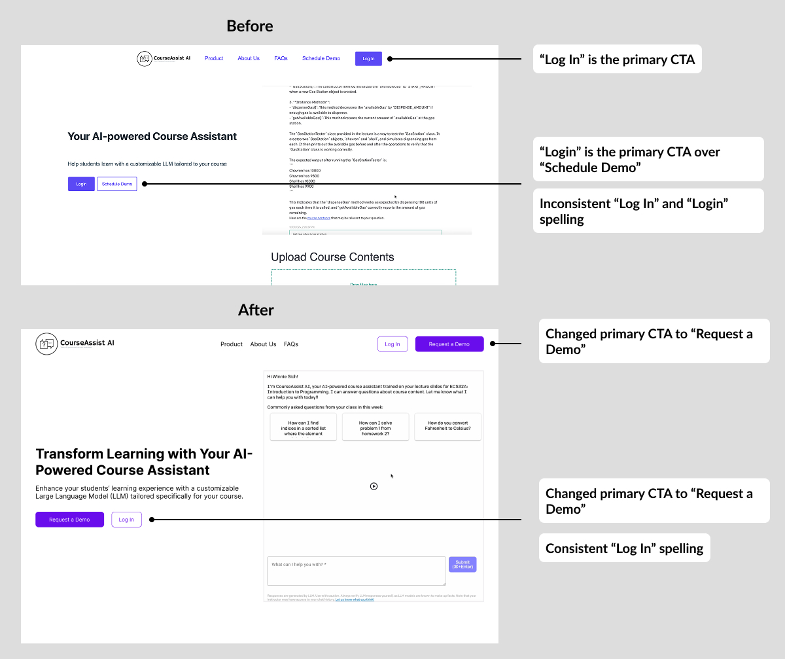Finalizing designs by addressing feedback while ensuring visual consistency
Based on client feedback, the layout was adjusted to present the product's features directly rather than within a carousel, as they wanted users to view each feature without skipping them.
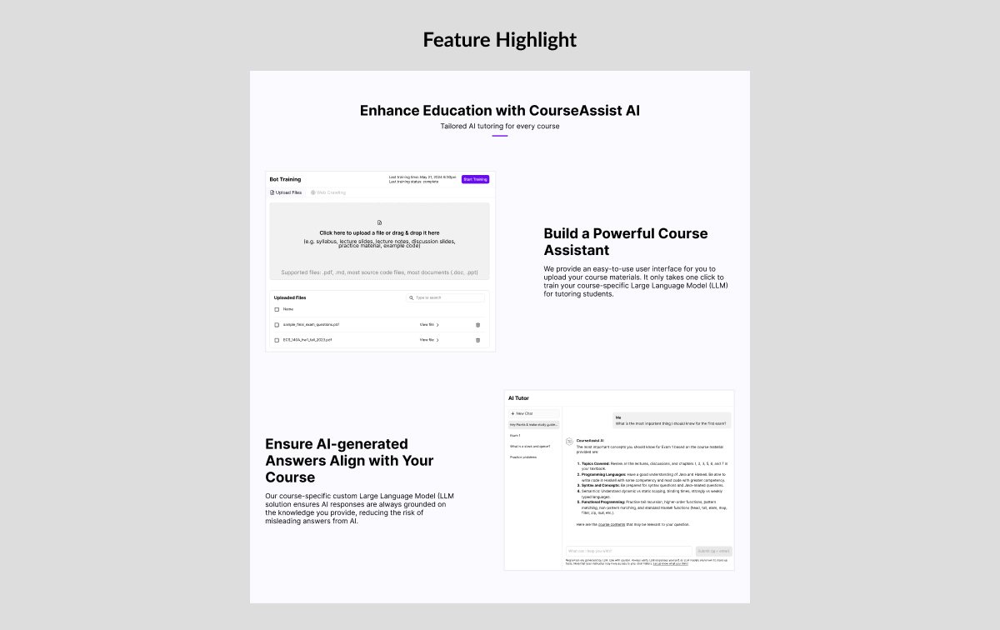To achieve visual consistency throughout the landing page, I utilized a grid system to guide content placement. Furthermore, despite the absence of a formal design system, I deliberately adopted the web application's primary color palette, featuring a vibrant purple, and its established button style. This approach was taken to maintain visual harmony and create a clear connection between the marketing website and the product itself.
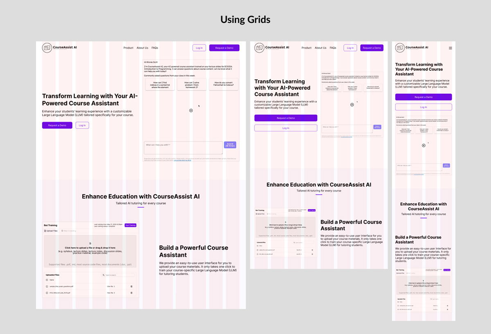Development
Following the design approval, I transitioned to the development phase, building the website with HTML5 for structure, CSS for styling, and JavaScript to implement interactive elements and dynamic functionality.
Performance optimization
Compressing & using the right format for media
Since the website will use a lot of media, from images to video demos, it is crucial to use the correct format and appropriate file size. I ensured that the format of images were JPEG around 500KB in size, and video demos were MP4 to ensure fast loading times.
Minimizing HTTP requests
To minimize initial HTTP requests and improve page load time, I implemented lazy-loading for images and video demos. This ensures that media not immediately visible in the viewport is only loaded when the user scrolls, improving the initial loading speed.
Accessibility considerations
Alternative text
Every media on the website has alternative text to give the media context. This is important because screen readers use this text to convey the media's purpose to visually impaired users.
Semantic HTML
I used semantic elements such as <nav>, <main>, and <footer> to provide structural meaning to the content. Not only does this aids screen readers in navigating the page, but it also improves SEO and code readability.
Responsiveness
To achieve responsiveness, I went for a mobile-first approach and used techniques such as CSS media queries and flexbox layout. This allow users to visit the website in various devices, making it fully operable.
I also tested this on different screen sizes through Chrome DevTools and different devices to properly ensure responsiveness and cross-browser compatibility.
Color contrast & font size
I ensured that font sizes were no less than 12 point and utilized tools such as WebAIM's Contrast Checker to guarantee sufficient contrast between text and background colors. This allow all users to perceive the website's information without difficulty.
Search engine optimization (SEO)
Meta description tags
The landing page was implemented with a unique and descriptive meta description tag. This provides search engine crawlers with a summary of the page's content, helping them understand its relevance to what the user is searching for.
Website structure & responsiveness
A clear and logical website structure is essential for SEO. I ensured the site had a well-defined hierarchy, making it easier for search engine crawlers to understand and index the content. Furthermore, the responsive design implemented ensures a consistent and positive user experience across all devices, which is a significant ranking factor for search engines.
The Redesign
I am still currently working to improve the overall accessibility of the website to ensure that it complies with WCAG 2.2 Accessibility Guidelines as time allows. This includes implementing techniques such as adding aria-hidden="true" attribute to decorative <div> elements to improve the experience for screen reader users.
Before
After
Navigation bar
The redesign of the navigation bar effectively utilizes the primary color to establish a clear visual hierarchy, addressing the previous issue where its overuse on links failed to emphasize key elements. The primary color is used for call to actions. I also intentionally changed the previous primary call to action, "Log In" to "Request a Demo" to emphasize engagement and drive conversion rates.
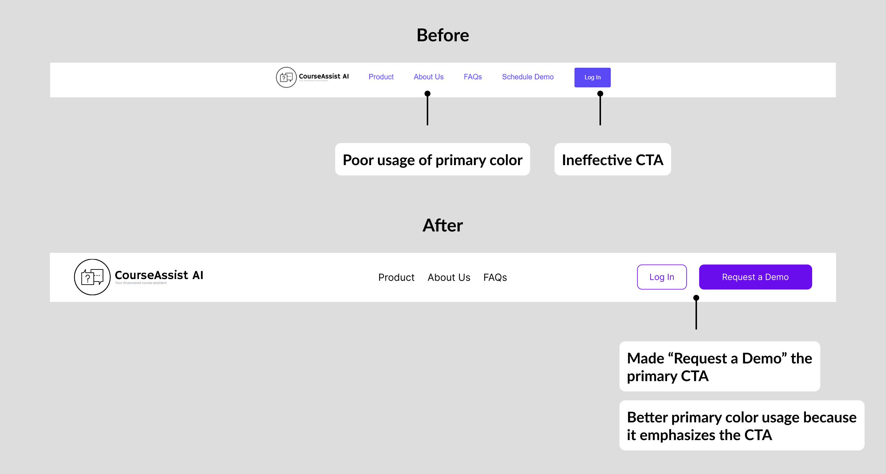Hero section
The previous hero section incorrectly placed "Log In" as their primary call to action, assuming visitors were already users of CourseAssist AI. However, since one of the goals is to increase conversion rates, the redesign shifts the primary call to action to "Request a Demo." Furthermore, the previous website had inconsistencies in the spelling of "Log In," appearing both as "Log In" in the hero section and "Login" in the navigation.
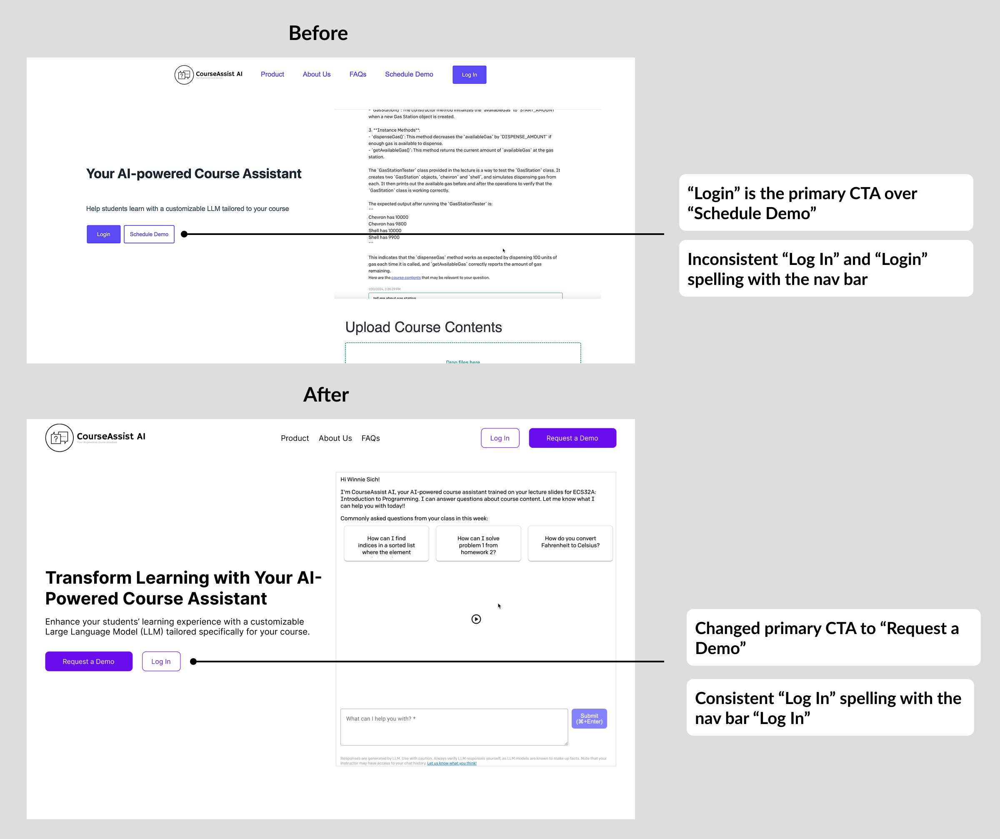Product features
The previous product feature section had issues in visual hierarchy, making it difficult for users to quickly understand the key benefits. Although the header were bolded, they were the same size as the paragraph text, failing to establish a clear distinction. Moreover, the lack of whitespace between the features resulted in a cluttered and overwhelming layout, which negatively impacted legibility and readability.
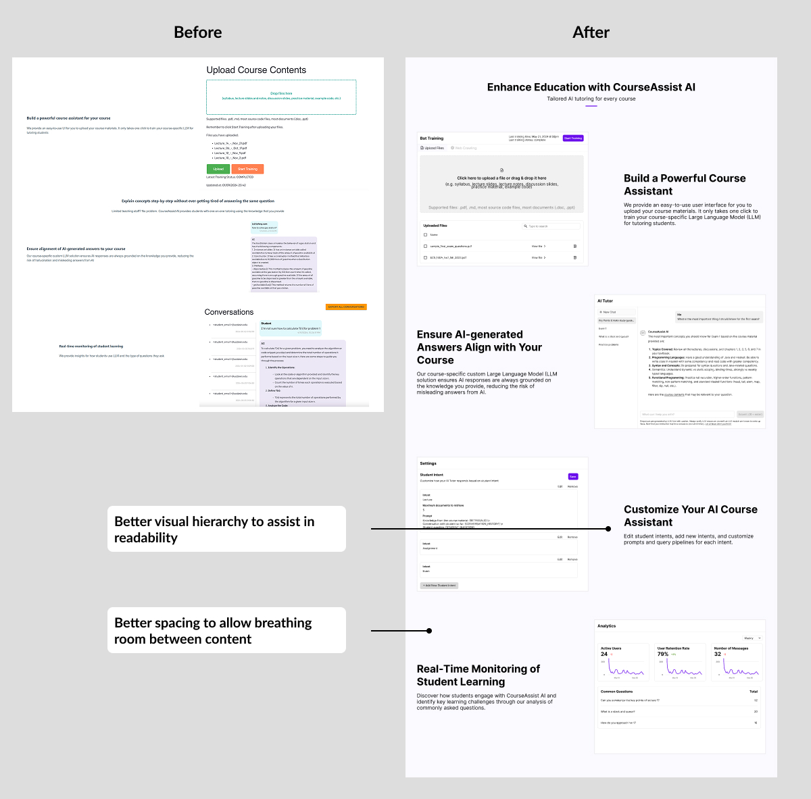FAQ section
The previous FAQ section was disorganized and had issues with readability due to the text spanning the entire screen. Additionally, the inconsistent alignment of answers, with some left-aligned and some center-aligned, created an unprofessional experience, making it hard for users to quickly find the information they needed.
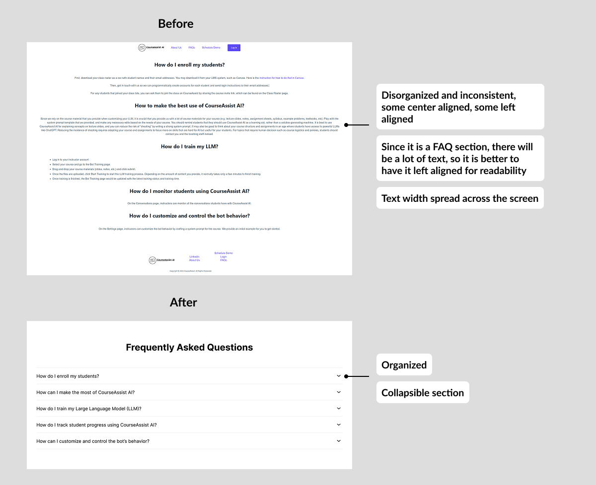Demo
Results
Within the 2-week timeframe, I successfully redesigned and implemented the new CourseAssist AI website, resulting in a significantly improved user experience. By establishing a clear visual hierarchy, users can easily understand the information presented, and the redesigned calls to action provide clearer pathways for engagement. Addressing the previous responsiveness issues also ensures a seamless experience across all devices. These improvements aim to create a stronger first impression, positioning CourseAssist AI more effectively to attract and engage potential clients.
Email Notification Settings and Pinned Messasges Feature
Design
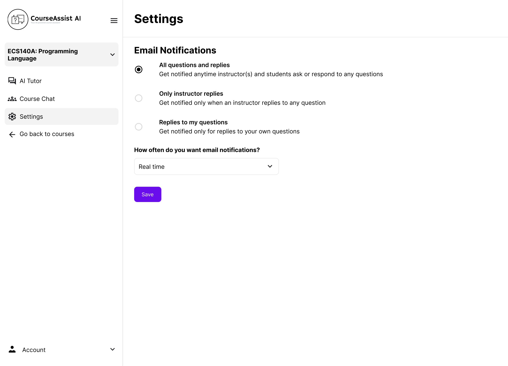 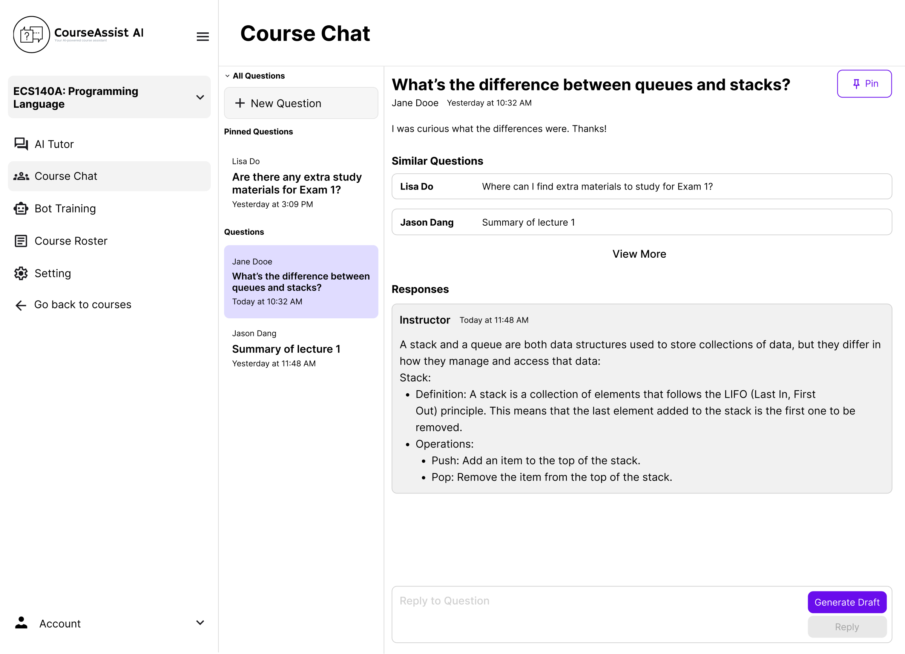Development
Front-end
I initialized variables to store the selected frequency and email notification settings, fetched the current preferences from the API route, and displayed them using reactive form elements in radio buttons and a dropdown. I used Svelte's bind:group and bind:value to link the user selections directly to the state. When the user clicks "Save," it sends a POST request to update the settings and displays a confirmation message.
Back-end
I defined an API endpoint using Flask that manages email settings for a specific course. It supports both GET and POST methods. It first checks for user authentication by retrieving cookies and verifying the user ID through Firebase. If the user is authenticated and authorized, a GET request fetches the email settings, returning default values if none exists. A POST request allows the user to update their email preferences and frequency. I handled potential errors, such as invalid input, by returning an appropriate error response.